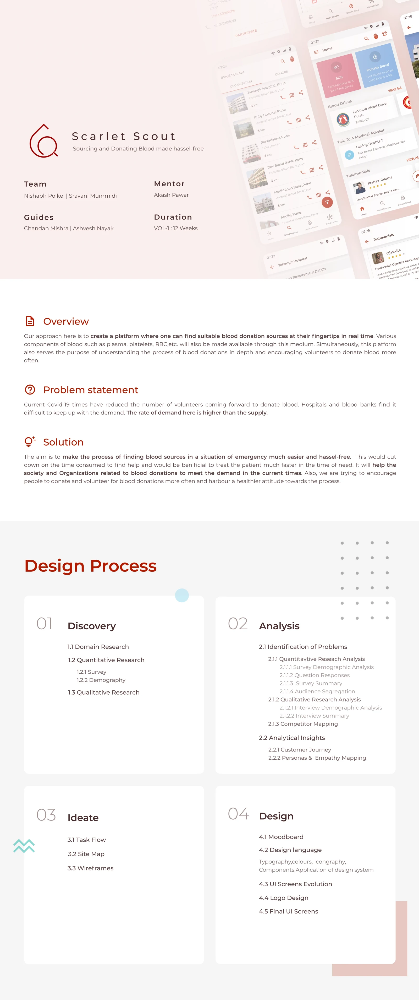
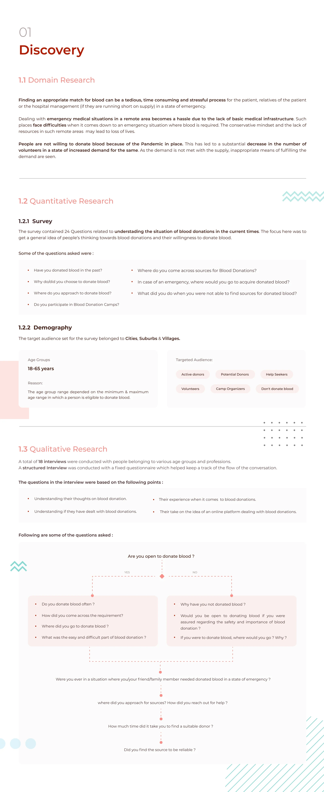
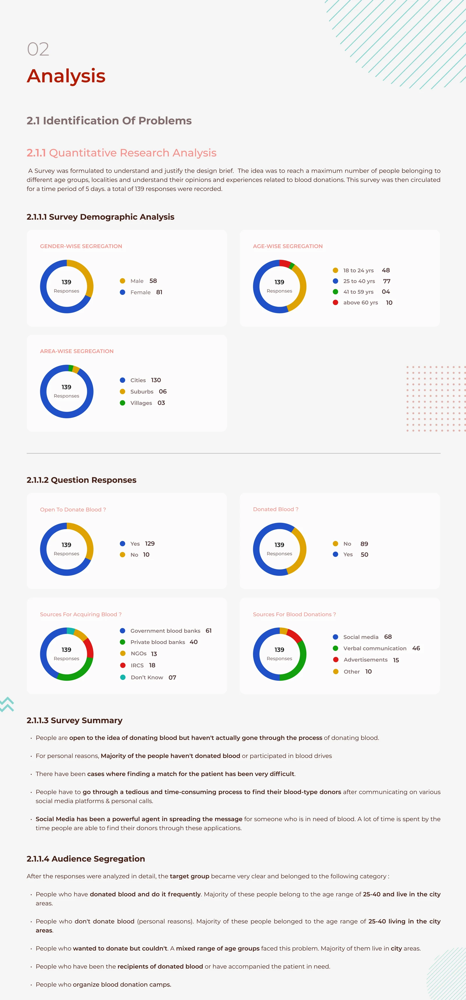
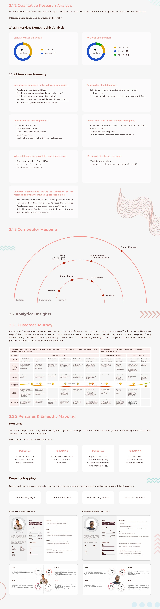
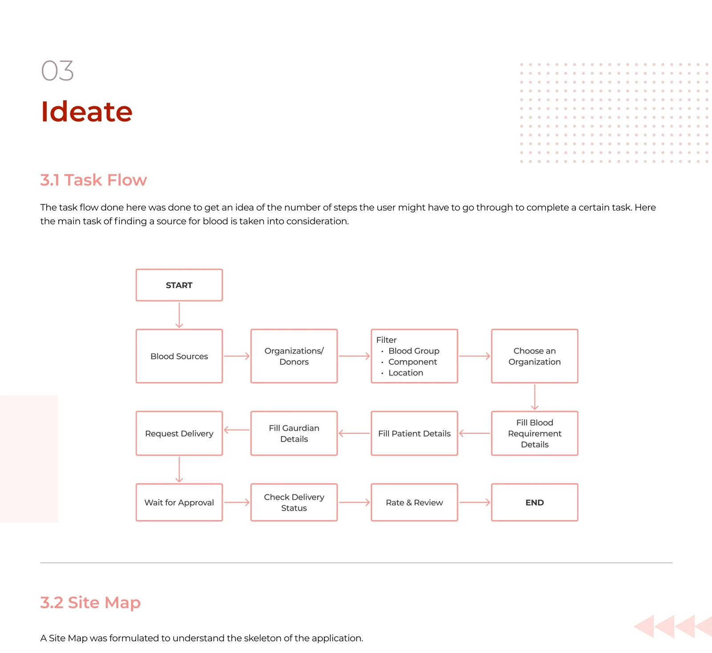
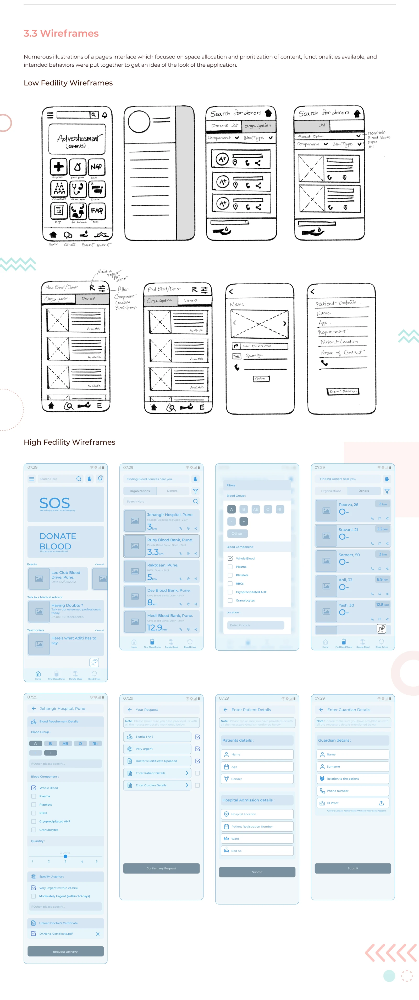
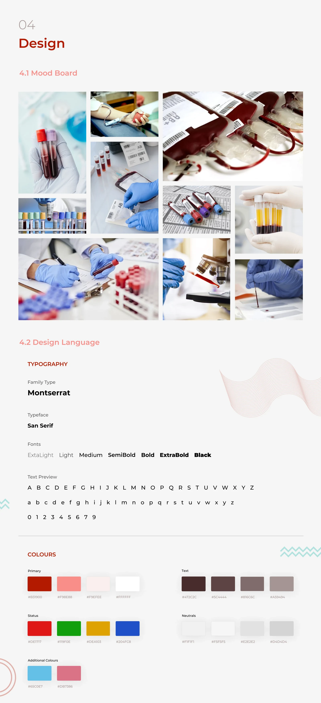
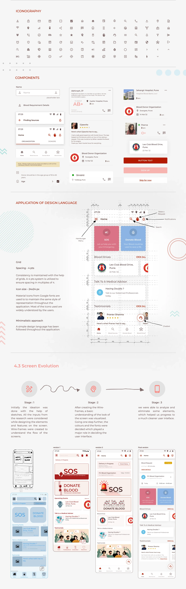
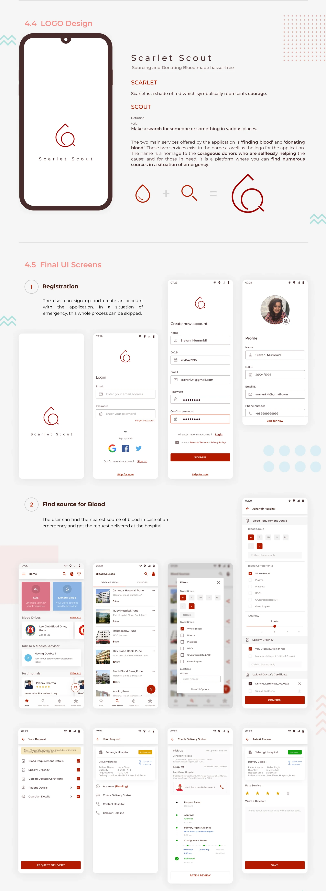
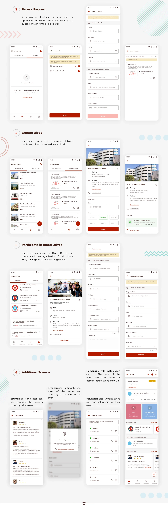

Scarlet Scout
A blood-donation app concept developed during an interaction-design internship project at Coditas.
Co-authored with Sravani Mummidi. Published April 2022.
Explore the project on BehanceDownload the project site map
View the 11 project panels


























